In this project, I analyzed and broke multiple symmetric-key ciphers using CrypTool-1, a cryptanalysis platform. I worked with both known and unknown plaintext scenarios, applying various cryptographic techniques including frequency analysis, known plaintext attacks, and brute-force methodology. The project deepened my understanding of classical cipher mechanisms and modern encryption vulnerabilities.
I utilized CrypTool-1 as my primary analysis platform. This tool provides a comprehensive suite of cryptanalysis features including: - Symmetric cipher encryption/decryption - Frequency analysis and N-gram tools - Known plaintext attack capabilities - Manual substitution analysis - Brute-force key estimation
I began by identifying which ciphertexts corresponded to the same plaintext. Given that the Caesar cipher uses k = 3, I created a new file containing all ciphertexts and applied Caesar decryption through CrypTool's menu:
Encryption/Decryption → Symmetric (classic) → Caesar
I configured the key entry to use a numeric value of 3:
CrypTool Caesar cipher configuration with key = 3
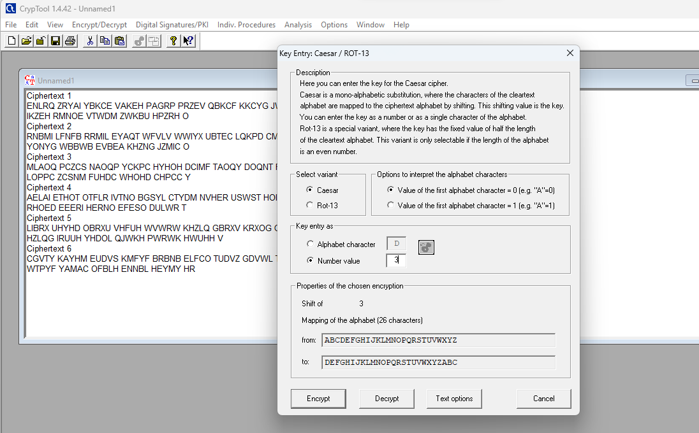
After decryption, I successfully identified Ciphertext 5:
Decrypted output revealing Ciphertext 5
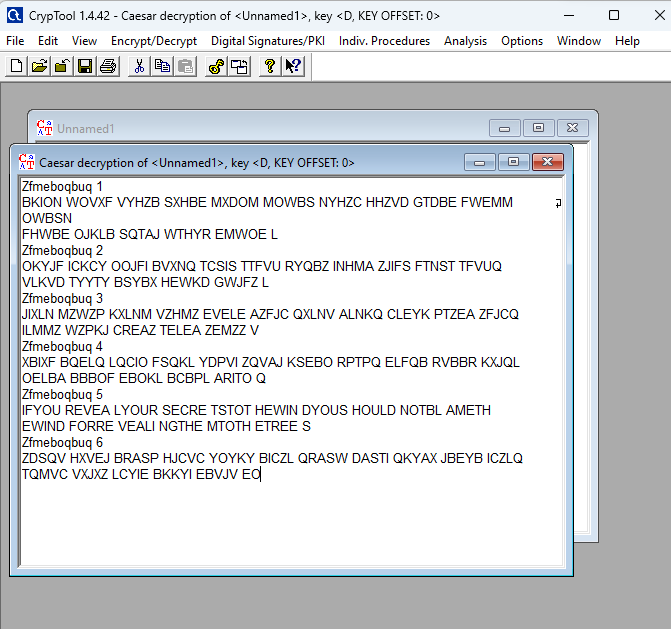
The plaintext read: "IF YOU REVEAL YOUR SECRETS TO THE WIND, YOU SHOULD NOT BLAME THE WIND FOR REVEALING THEM TO THE TREES"
Based on my analysis, I identified the following cipher methods for each ciphertext:
I employed a known plaintext attack on Cipher 2. I navigated to:
Analysis → Symmetric Encryption (classic) → Known Plaintext → Hill
Accessing the Hill cipher known plaintext attack feature
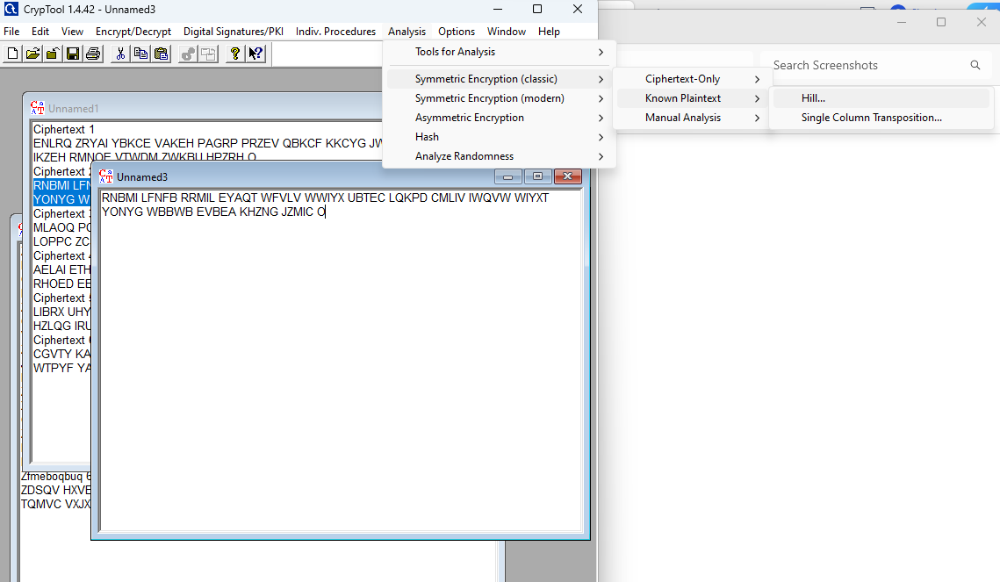
I specified the discovered plaintext and Cipher 2 as the ciphertext, setting the dimension to 3×3 as required:
Configuring the known plaintext attack parameters
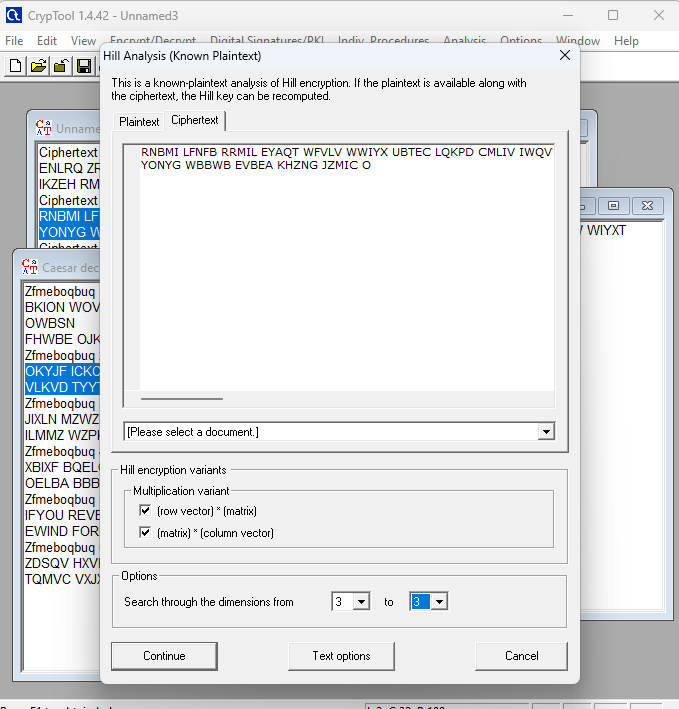
The analysis yielded the key matrix:
Hill cipher key matrix extraction
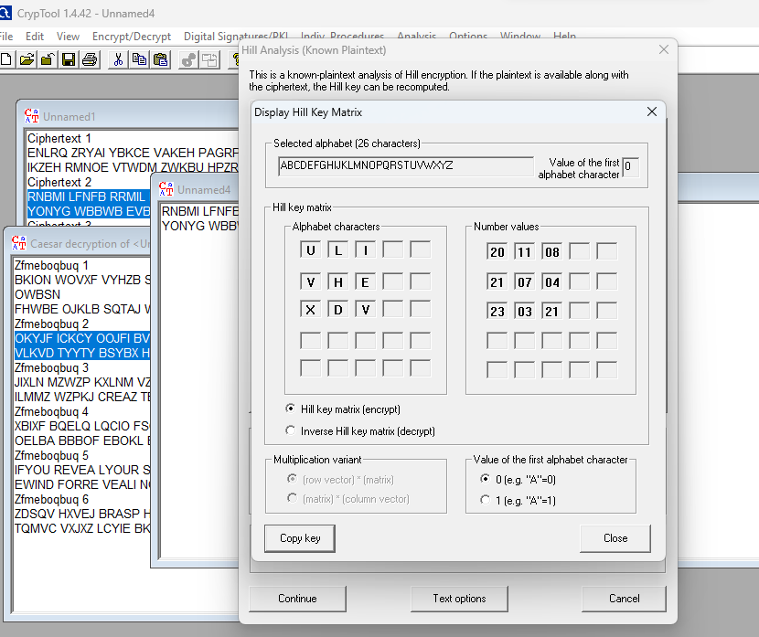
For Cipher 3 (Affine), I used CrypTool's manual substitution analysis:
Analysis → Symmetric Encryption (classic) → Manual Analysis → Substitution
Accessing the manual substitution analysis tool
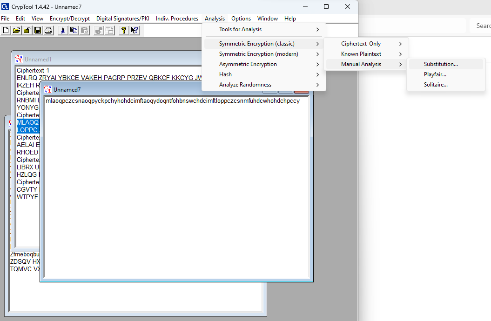
By comparing letter correspondence between the plaintext and ciphertext, I determined the affine function:
Manual substitution analysis results
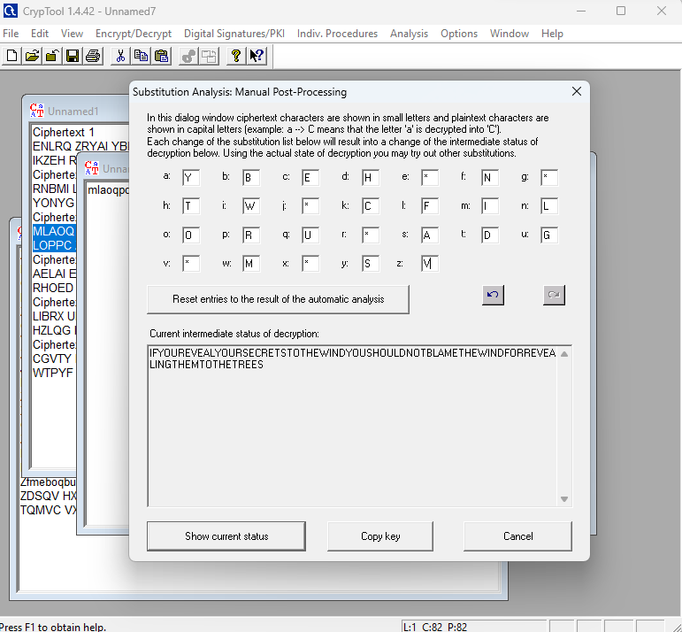
Affine Key: f(x) = (9x + 18) mod 26
To identify Cipher 4 as a permutation cipher, I compared letter frequency distributions. I used:
Analysis → Tools for Analysis → N-Gram
N-Gram analysis tool interface
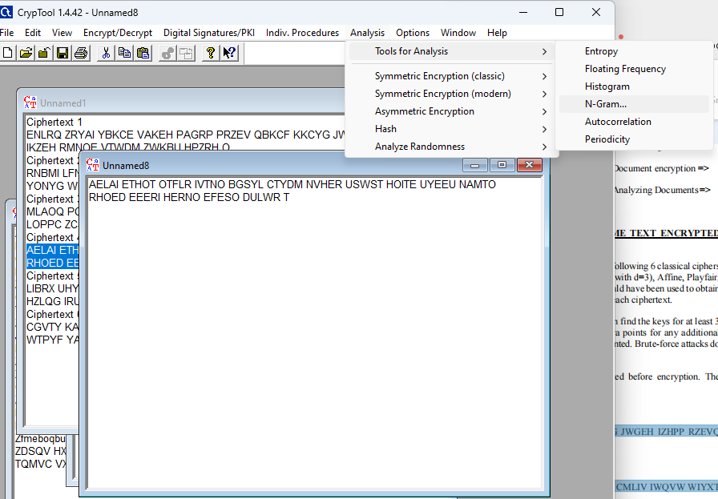
The plaintext frequency distribution:
Plaintext letter frequency analysis
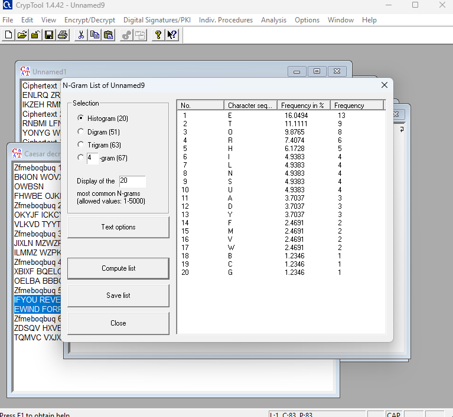
Cipher 4's frequency distribution showed identical character frequencies:
Ciphertext 4 letter frequency analysis
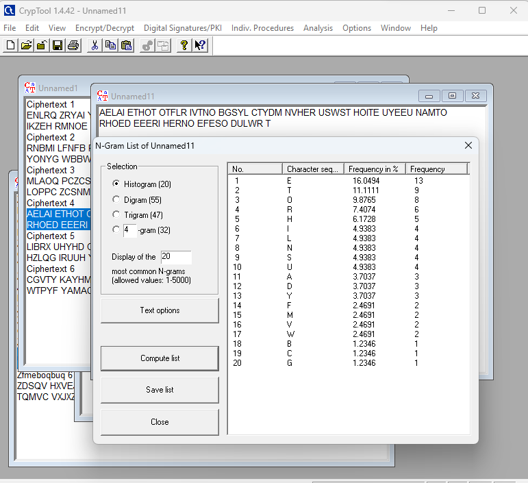
This matching frequency profile confirmed that Cipher 4 was a transposition cipher rather than a substitution cipher.
Cipher 6 exhibited a characteristic of Playfair encryption—an extra character beyond the original plaintext length. This occurs when the plaintext contains duplicate letters in a pair. In the word "TREES," the pair "EE" (at positions 79-80) requires a filler character, confirming this as a Playfair cipher.
For Cipher 1, I applied a known plaintext attack using the Vigenere square. By comparing plaintext, ciphertext, and their correspondence on the Vigenere table, I extracted the key:
Vigenere square (tabula recta) used for key derivation
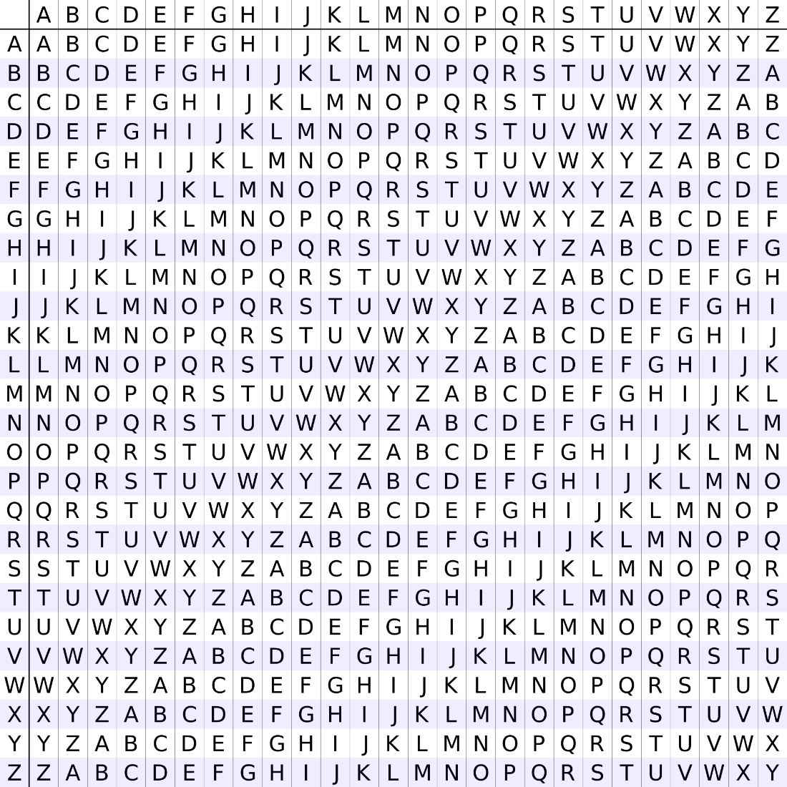
| I | F | Y | O | U | R | E | V | E | A | L | Y |
|---|---|---|---|---|---|---|---|---|---|---|---|
| E | N | L | R | Q | Z | R | Y | A | I | Y | B |
| W | I | N | D | W | I | N | D | W | I | N | D |
Vigenere Key: WIND (repeated throughout the plaintext)
In this phase, I faced 6 different ciphertexts encrypted with unknown algorithms and no known plaintext.
I attempted Caesar decryption with k = 3 on all ciphertexts. This successfully decrypted Cipher 6:
Caesar decryption of Cipher 6
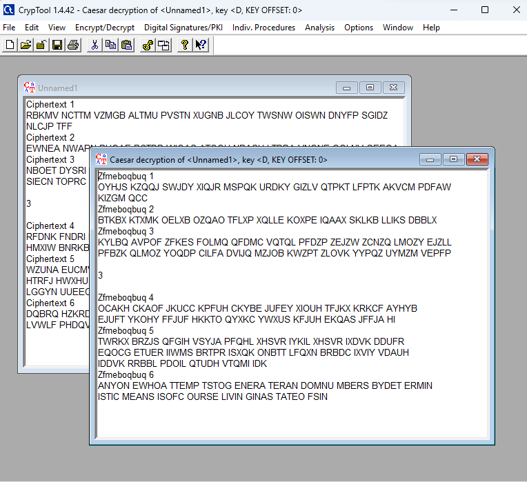
Decrypted plaintext: "Anyone who attempts to generate random numbers by deterministic means is of course living in a state of sin"
Based on frequency analysis and cipher characteristics, I classified the remaining ciphers:
I explored CrypTool's advanced features to visualize cipher operations. I navigated to the Rijndael Inspector:
Accessing Rijndael Inspector through CrypTool menu
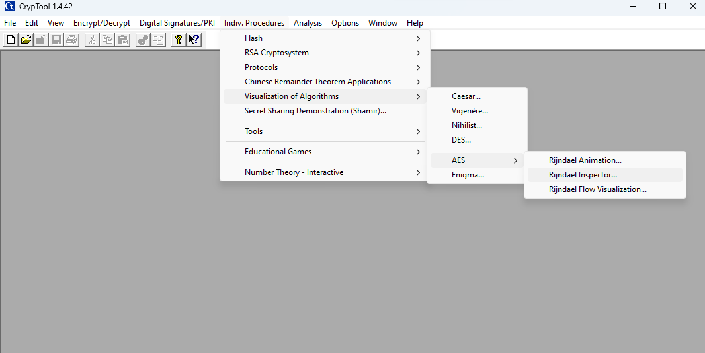
Due to Flash Player discontinuation, I referenced the demonstration from the sample report. The analysis involved setting input and cipher key values to zeros:
Rijndael Inspector application window
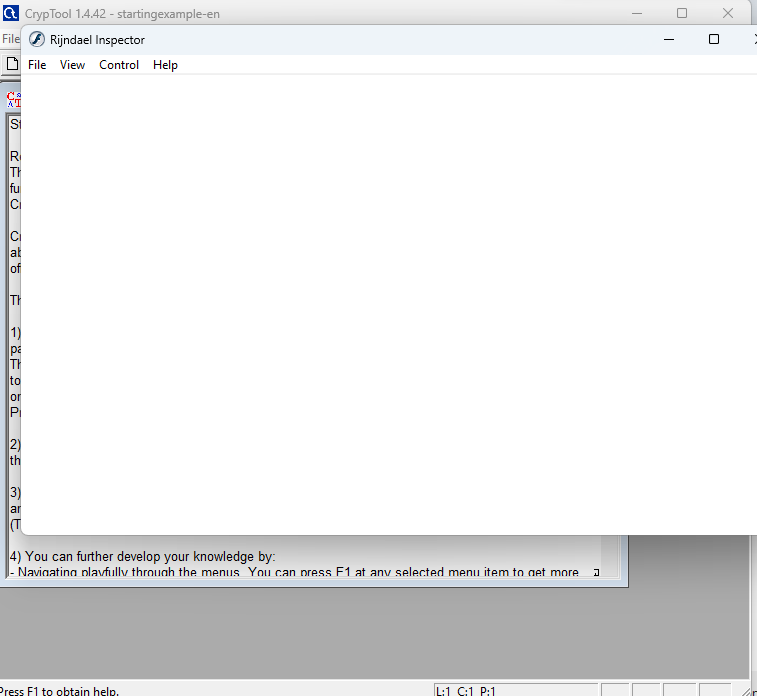
Lab assignment instructions alongside Rijndael Inspector with all-zero input and key
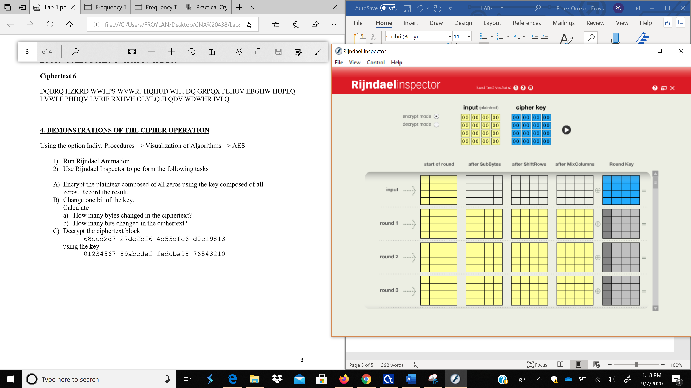
Rijndael Inspector encryption result: all-zero plaintext with all-zero key producing ciphertext 66ef88ca...
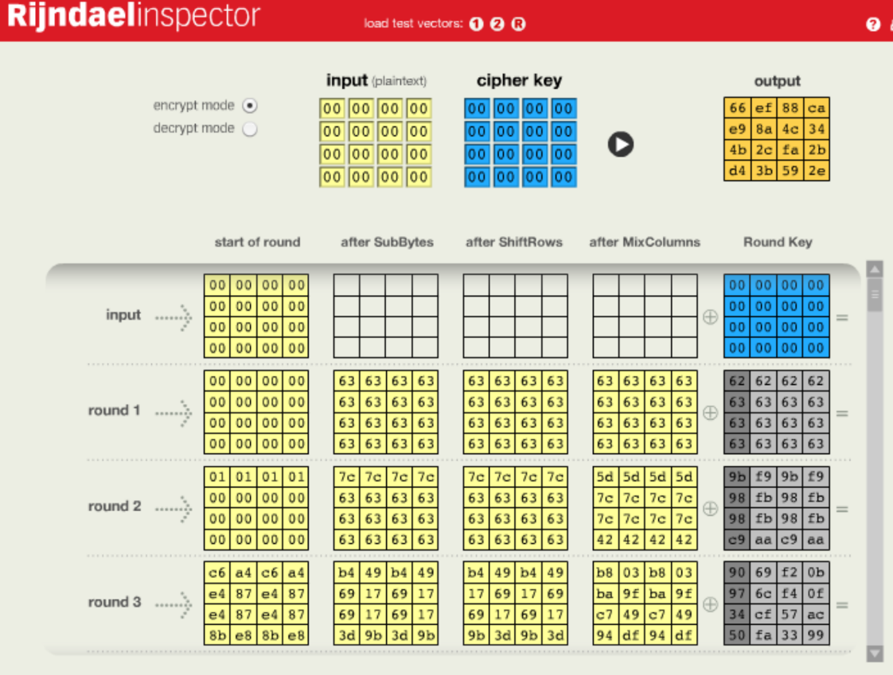
I then demonstrated the avalanche effect in encryption—how a single-bit key change produces dramatically different ciphertext:
Ciphertext with key modified by one bit
The analysis revealed that changing just one bit in the key resulted in changes across every byte of the ciphertext, demonstrating the strong diffusion properties of AES.
I decrypted a ciphertext block using a known key:
Ciphertext: 68ccd2d7 27de2bf6 4e55efc6 d0c19813
Key: 01234567 89abcdef fedcba98 76543210
Decryption result
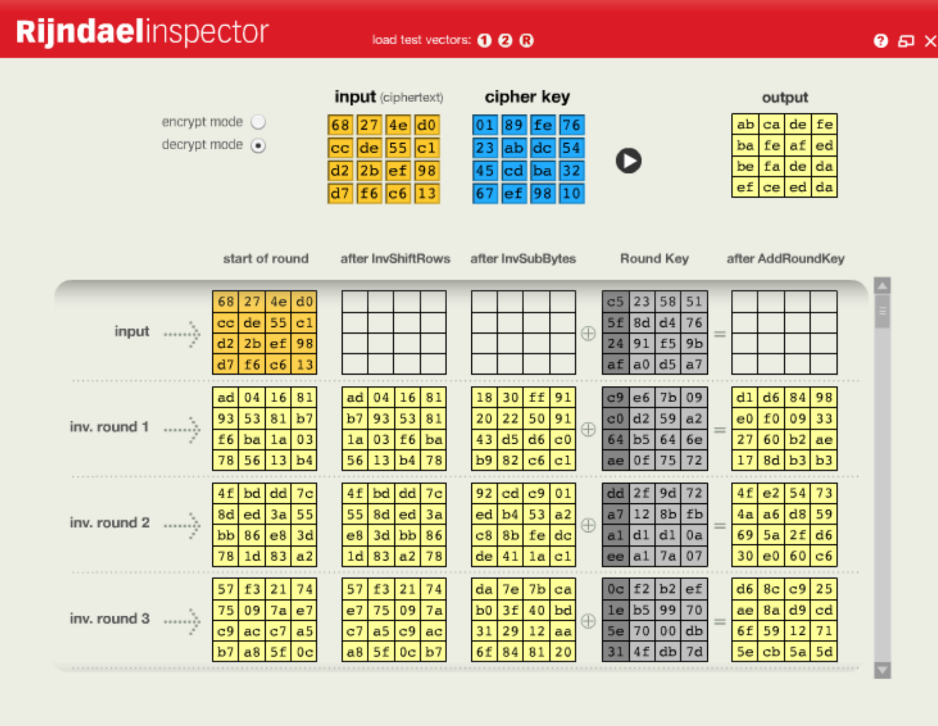
I encrypted the plaintext "I am laxman puri" using DES (ECB) with the key:
Key: 00 00 00 00 00 ff ff ff
DES encrypted output
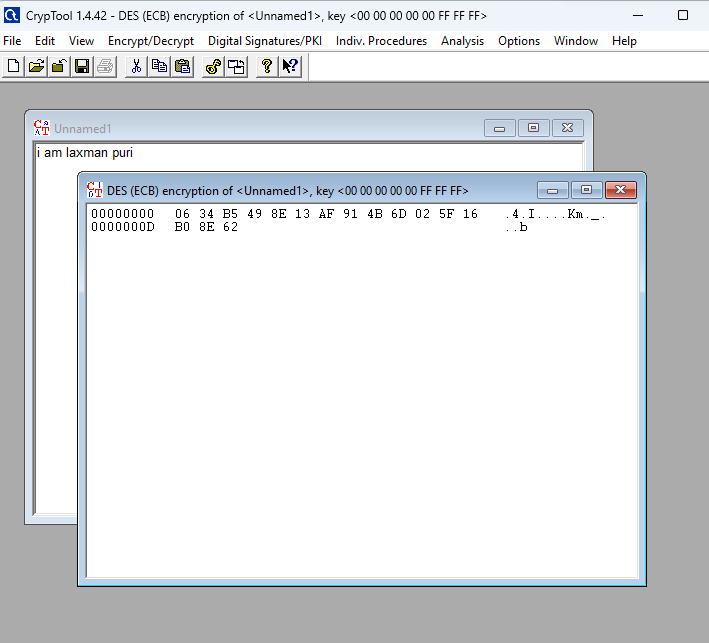
I then performed a brute-force attack, constraining the first 10 hexadecimal digits to zeros. CrypTool performed a 21-bit brute-force search with estimated key recovery in approximately 14 seconds:
DES (ECB) brute-force analysis — 21-bit search, ~14 seconds remaining
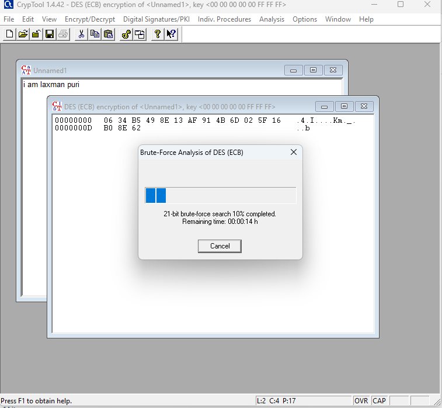
I modified the key to 00 00 00 00 0f ff ff ff and repeated the attack. CrypTool performed a 24-bit brute-force search with estimated time of approximately 2 minutes:
DES (ECB) brute-force analysis — 24-bit search, ~1:54 remaining
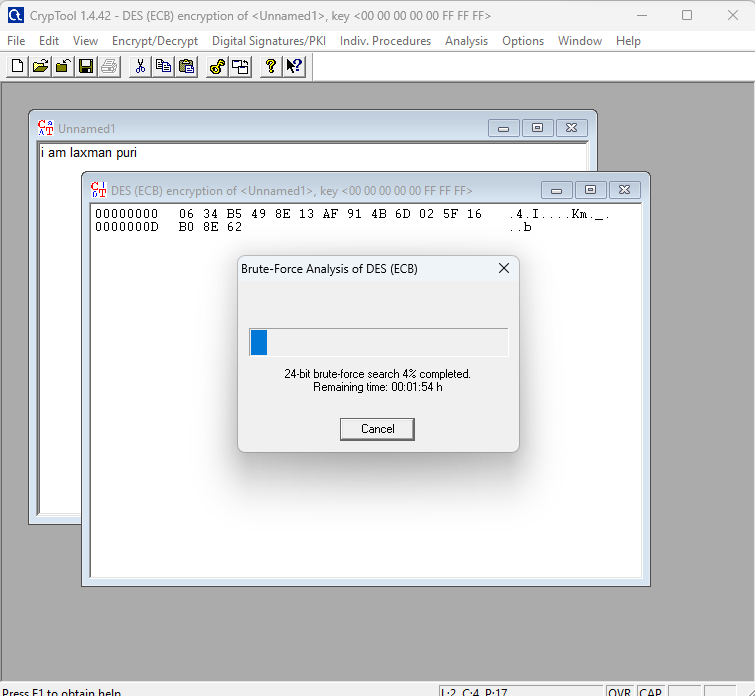
With the key 00 00 00 00 ff ff ff ff, providing one fewer hexadecimal digit to constrain, the estimated attack time jumped to approximately 29 minutes—demonstrating the exponential growth of the search space.
DES (ECB) brute-force analysis — 28-bit search, ~29 minutes remaining
Each additional unknown bit exponentially increases the search time, clearly demonstrating how key length provides security against brute-force attacks.
I evaluated brute-force attack times across different encryption algorithms:
Triple DES (ECB) with key ending in ff ff ff ff ff: Expected attack time: 47 minutes
Triple DES (ECB) brute-force analysis — 28-bit search, ~47 minutes remaining
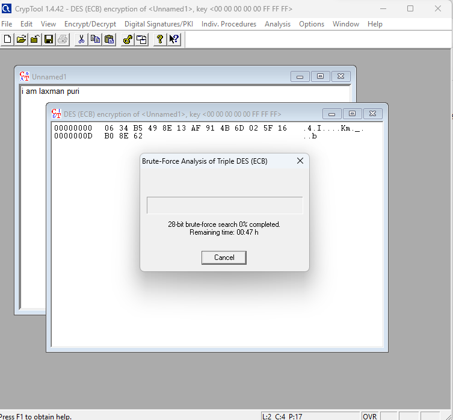
DES (CBC) mode: Expected attack time: 53 minutes
DES (CBC) brute-force analysis — 28-bit search, ~53 minutes remaining
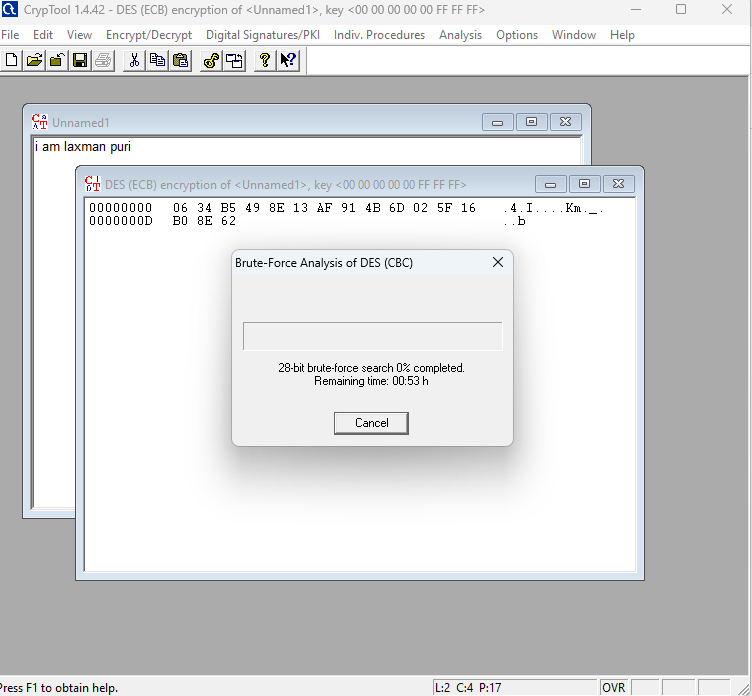
Rijndael (AES) mode: Expected attack time: 1 hour 10 minutes
Rijndael (AES) brute-force analysis — 32-bit search, ~1 hour 10 minutes remaining
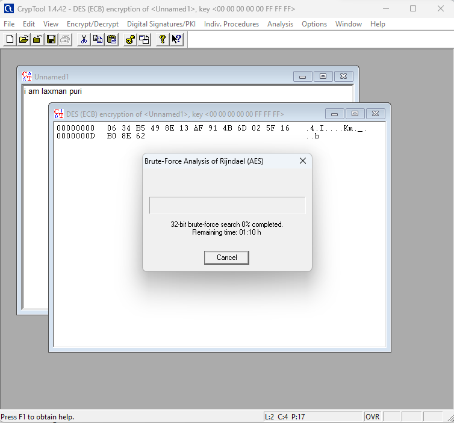
Frequency Analysis Effectiveness: Classical ciphers like Caesar, Affine, and Vigenere remain vulnerable to frequency analysis and known plaintext attacks—demonstrating why modern algorithms are essential.
Cipher Identification: Each cipher type leaves distinctive fingerprints—frequency patterns for substitution, matching frequencies for transposition, and length anomalies for Playfair.
Avalanche Effect: Modern block ciphers like AES exhibit strong avalanche properties, where minimal key changes produce drastically different ciphertexts, enhancing security.
Exponential Key Space Growth: Each additional unknown bit approximately doubles the brute-force attack time, underscoring the exponential nature of cryptographic key spaces.
Algorithm Comparison: Across tested algorithms, attack times scale from seconds to days with similar constraints, reflecting differences in cipher complexity and key schedules.